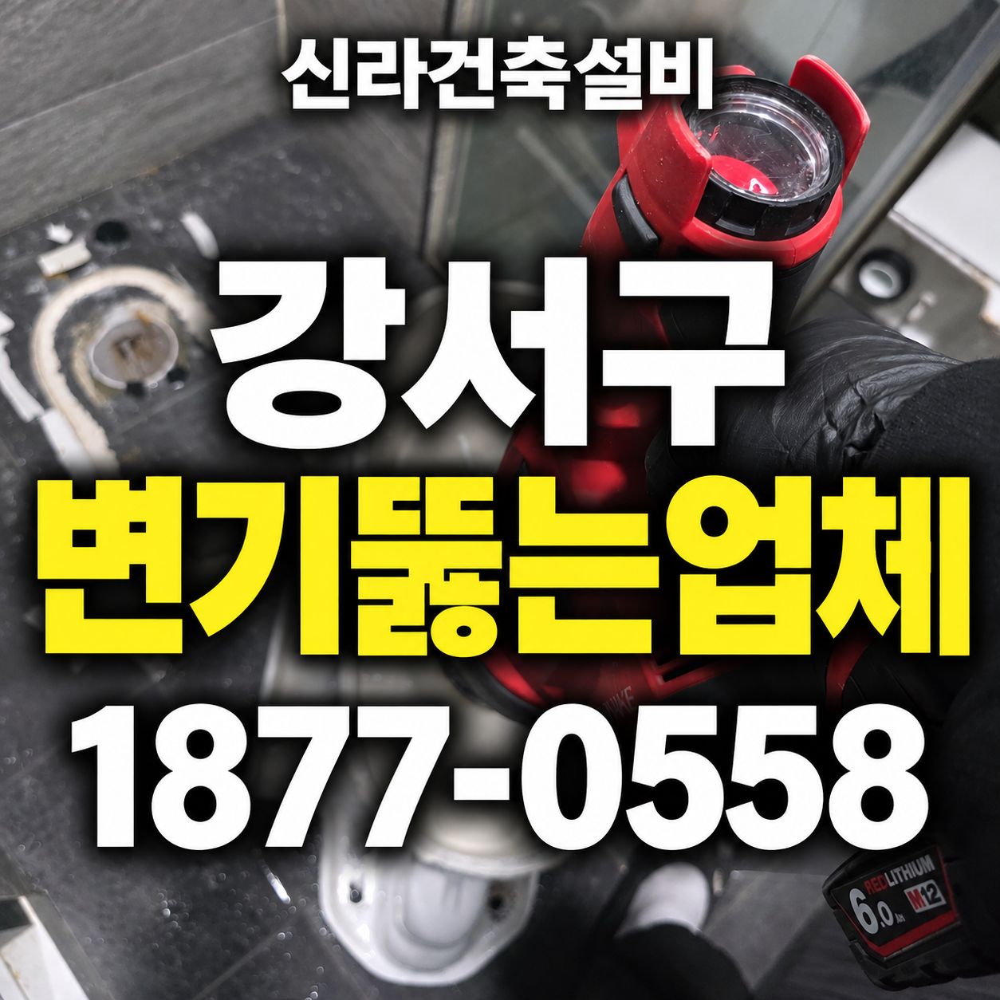
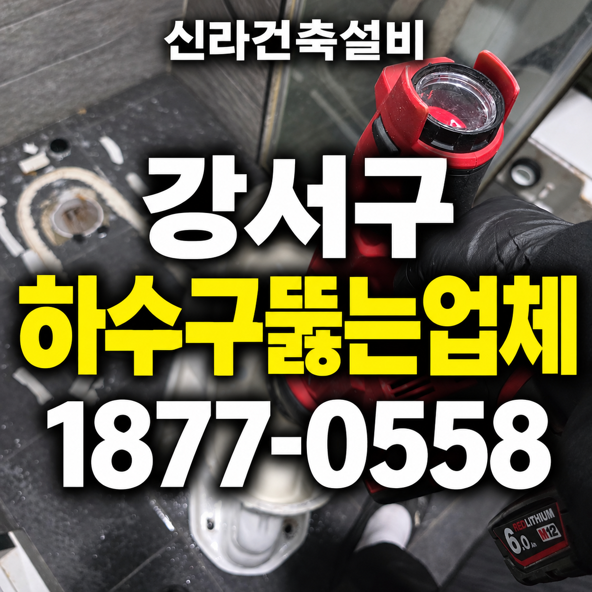
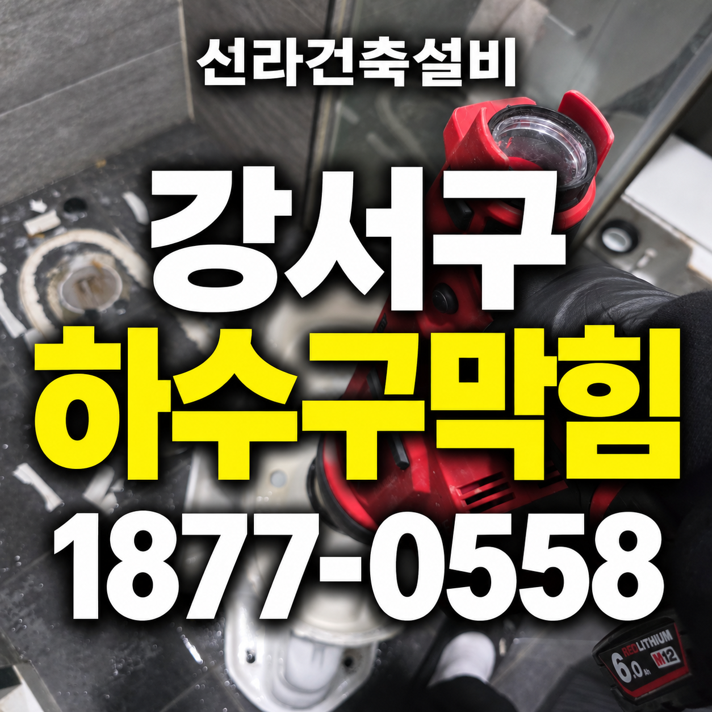
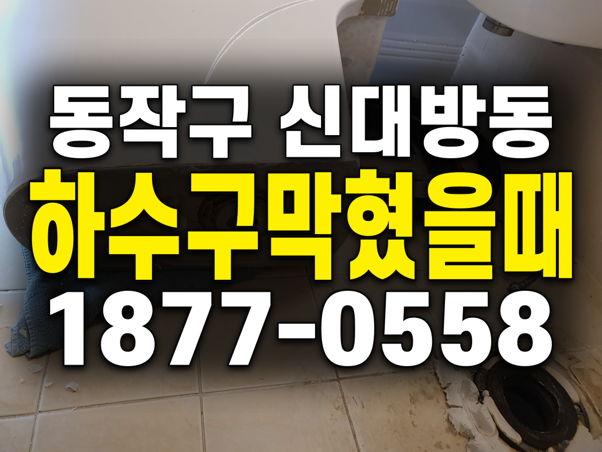
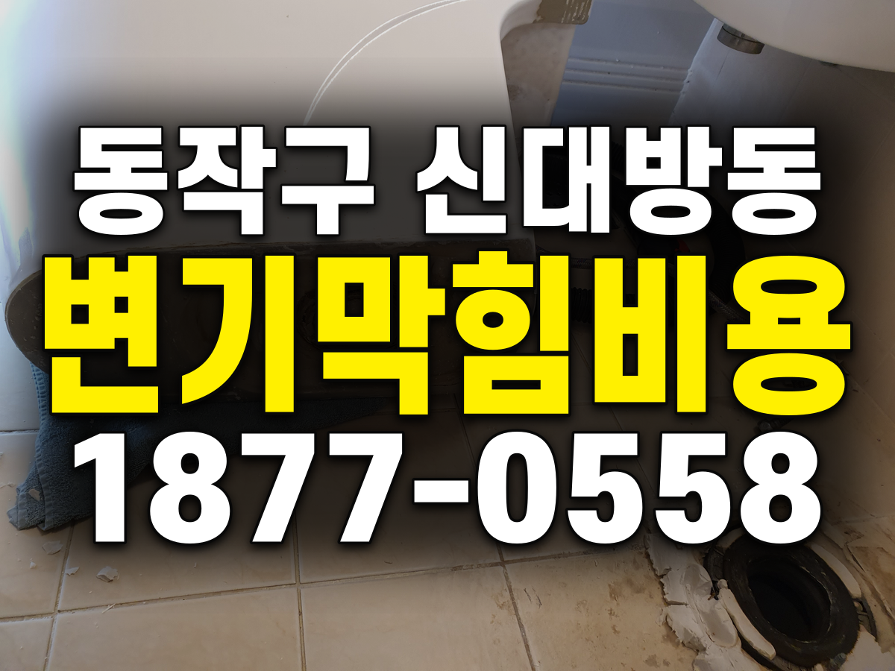

변기막힘 증상은 원인 구간부터 확인합니다
물이 천천히 내려가거나 수위가 차오르는 막힘, 물이 안 내려가는 증상, 이물질 막힘, 반복 막힘, 변기 역류 등 같은 변기막힘 증상이라도 변기·배수구 내부, 연결 배관, 오수관 또는 공용배관처럼 원인이 발생한 위치가 다를 수 있습니다. 신라건축설비는 증상만 보고 작업을 정하지 않고 현장 상태를 확인한 뒤 필요한 작업 범위와 비용 조건을 먼저 안내합니다.
실제 현장에서 확인되는 주요 원인: 물티슈·청소포·음식물·플라스틱 같은 생활 이물질, 변기 트랩 걸림, 하부 오수관 막힘
주요 점검·작업: 석션·에어건·내시경 점검·변기 탈거와 오수관 확인
변기막힘 원인부터 변기뚫는업체 선택까지
변기막힘 원인·변기역류·변기 물 안내려감·변기 이물질·반복되는 변기막힘·변기 탈거·오수관 막힘처럼 검색하는 상황은 표현은 달라도 같은 배수 문제에서 시작되는 경우가 많습니다. 신라건축설비는 단순 관통 여부만 보지 않고 증상, 막힘 위치, 이물질 여부와 배관 상태를 함께 확인해 필요한 작업을 판단합니다.
변기뚫는업체 선택 전 실제 작업사례를 확인하세요
광고 문구만이 아니라 실제로 어떤 증상을 어떤 장비로 진단하고 해결했는지가 중요합니다. 현재 신라건축설비 홈페이지에는 변기막힘 실제 현장사례 86편이 공개되어 있으며 지역, 원인, 작업 과정과 결과를 확인할 수 있습니다.
지역별 변기막힘·변기뚫는업체 실제 출동 기록
최근 변기막힘 해결사례
관악구 변기막힘·하수구막힘, 에어건 작업부터 백시멘트 마감까지
막힘 제거 후 재설치 상태는 어떻게 확인했을까요? 관통과 석션으로 해결되지 않은 변기막힘을 탈거 후 확인하고, 압축된 휴지를 에어건으로 처리했습니다. 재설치와 백시멘트 마감 후 정상 통수와 누수 없는 상태를 확인했습니다.
관악구 변기막힘·하수구막힘, 탈거 후 확인한 단단한 휴지 덩어리
단단하게 뭉친 휴지를 확인한 뒤 어떻게 작업했을까요? 관통과 석션으로 해결되지 않은 변기막힘을 탈거 후 확인하고, 압축된 휴지를 에어건으로 처리했습니다. 재설치와 백시멘트 마감 후 정상 통수와 누수 없는 상태를 확인했습니다.
관악구 변기막힘·하수구막힘, 탈거 전 설명과 협의가 필요한 이유
변기 뚫는 업체는 어떤 근거로 탈거를 안내할까요? 관통과 석션으로 해결되지 않은 변기막힘을 탈거 후 확인하고, 압축된 휴지를 에어건으로 처리했습니다. 재설치와 백시멘트 마감 후 정상 통수와 누수 없는 상태를 확인했습니다.
관악구 변기막힘·하수구막힘, 관통과 석션으로 해결되지 않았던 이유
변기가 막혔을 때 첫 작업으로 해결되지 않으면 무엇을 확인할까요? 관통과 석션으로 해결되지 않은 변기막힘을 탈거 후 확인하고, 압축된 휴지를 에어건으로 처리했습니다. 재설치와 백시멘트 마감 후 정상 통수와 누수 없는 상태를 확인했습니다.
관악구 변기막힘·하수구막힘, 압축된 휴지로 물이 내려가지 않던 현장
휴지만 넣었는데 왜 물이 내려가지 않았을까요? 관통과 석션으로 해결되지 않은 변기막힘을 탈거 후 확인하고, 압축된 휴지를 에어건으로 처리했습니다. 재설치와 백시멘트 마감 후 정상 통수와 누수 없는 상태를 확인했습니다.

강서구 하수구막힘·변기뚫는업체, 재설치 후 물내림과 누수까지 확인
강서구에서 변기 뚫는 업체를 선택할 때에는 이물질 제거뿐 아니라 재설치 뒤의 물내림과 누수 점검까지 살펴보세요. 물티슈·휴지 제거와 에어건 작업으로 마무리하고 재설치 후 원활한 물내림과 누수 없는 상태까지 확인했습니다.

강서구 하수구막힘·하수구뚫는업체, 하부 이물질 제거 후 에어건 작업
강서구에서 하수구 뚫는 업체를 찾으실 때에는 실제 막힌 위치에 맞춰 작업하는지 확인하는 것이 중요합니다. 하부 배관에 걸쳐 있던 이물질을 먼저 제거하고 남은 부분을 에어건으로 처리한 뒤 변기를 재설치했습니다.
강서구 하수구막힘·변기막혔을때, 충분한 설명과 협의 후 탈거한 현장
변기가 막혔을 때 탈거까지 해야 하는지 궁금하시다면, 먼저 시도한 작업의 결과와 남아 있는 문제를 함께 살펴보세요. 첫 작업의 한계를 충분히 설명하고 탈거를 협의한 뒤, 아래쪽에 걸린 물티슈와 휴지를 확인해 제거한 기록입니다.
강서구 변기막힘·하수구막힘, 석션으로 휴지가 나와도 해결 안 된 이유
휴지를 많이 회수한 것과 배수 통로가 정상으로 돌아온 것은 구분해서 확인해야 합니다. 석션으로 많은 휴지를 회수했지만 하부에 물티슈와 휴지가 남아 있어, 고객 협의 후 탈거와 후속 작업을 진행했습니다.

강서구 하수구막힘·변기막힘, 꿀렁거리던 변기에서 물티슈와 휴지 확인
하수구 막힘으로 상담하시는 배수 불편 중에는 변기와 그 아래 연결부를 확인해야 하는 경우도 있습니다. 물이 꿀렁거리는 증상에서 출발해 석션과 탈거로 원인을 확인하고, 이물질 제거 후 물내림과 누수를 점검한 사례입니다.

동작구 신대방동 하수구막혔을때 변기막힘 사례, 변기 출구에 걸린 플라스틱 제거 사례
배수 불편의 원인이 변기 하부에 남은 플라스틱이었던 현장입니다. 탈거 후 이물질을 꺼내고 재부착과 정상 통수 확인까지 진행했습니다.

동작구 신대방동 변기막힘비용, 플라스틱 제거와 재부착 작업 범위
변기 하부에 걸린 플라스틱을 꺼내기 위해 탈거와 재부착을 진행한 사례입니다. 금액보다 실제로 필요한 작업 범위를 중심으로 소개합니다.
서울·경기·인천 변기막힘 출동
서울 61편 · 경기 24편 · 인천 1편의 실제 기록을 기반으로 지역별 사례를 연결합니다. 새로운 현장사례가 등록되면 해당 서비스와 지역 허브에 함께 누적됩니다.